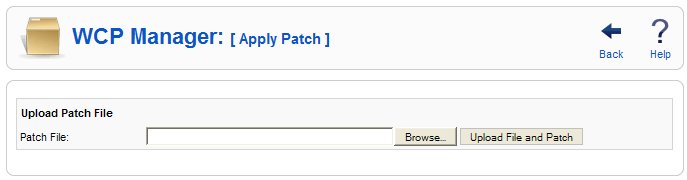

Here you can apply a patch to the site.

At the top right you will see the toolbar:
Back. Click on it and it will get you back to the child list.
Help. Opens this Help Screen.
You can patch your Joomla! to the last version by uploading Joomla_1.5.x_to_1.5.last-Stable-Patch_Package.tar.gz patch file here.